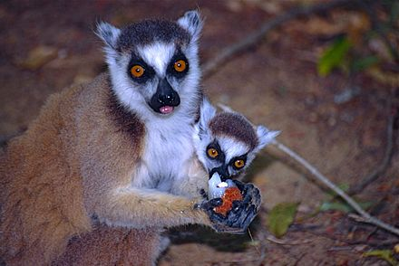
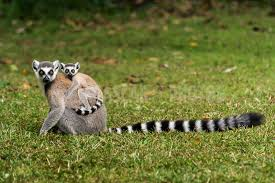

Le maki catta est probablement le plus connu des lémuriens en raison de sa présence fréquente dans les zoos. C'est une espèce de taille moyenne (environ 40 cm), pesant entre 2,3 à 3,5 kg[1]. La fourrure du dos est généralement brun-gris, la croupe et les membres sont gris clair, alors que les parties intérieures sont blanches ou crème. Le front, les joues, les oreilles et la gorge sont blancs. Les yeux sont cerclés de noir et le museau est noir. La queue, symbolique de l'espèce, est annelée de blanc et de noir.
Il n'y a pas de différence de pelage entre les deux sexes.
Écologie et comportement
Alimentation

Femelle et son petit mangeant un litchi (Réserve de Berenty, Madagascar).
Le maki catta est principalement frugivore, bien que son régime alimentaire contienne également des feuilles.
Les feuilles et les gousses de tamarinier sont l'une de ses sources principales de nourriture.
Au moins 109 espèces de plantes ont été trouvées dans le régime alimentaire du maki catta dans la réserve de Berenty.
Dans le massif d'Andringitra, le régime alimentaire du maki catta diffère de celui qu'il suit en basse altitude.
Les variations saisonnières sont également importantes.
Comportement
Le lémur catta est diurne, actif exclusivement à la lumière du jour.
Ils vivent dans les arbres et s'organisent en sociétés dirigée par une femelle dominante, d'une vingtaine d'individus et généralement que d'un mâle.
Ils se déplacent par bonds et peuvent faire des sauts de plus de 10 mètres.
Ils vivent environ 20 ans.
Reproduction

Bébé maki et sa mère
Ce lémurien malgache affronte les autres mâles à coups d'odeurs pestilentielles,caractéristiques de chaque animal, dégagées par des glandes situées sur ses avant-bras et près des régions génitales.
La femelle porte un à deux petits et la gestation dure entre 120 et 136 jours.
Répartition géographique et habitat
Parc Masoala de Madagascar
Répartition géographique du lémur catta à Madagascar.
Comme tous les lémuriens, le maki catta est endémique de Madagascar.
L'espèce est présente dans les fourrés épineux du sud et du sud-ouest de l'île, ainsi que dans la forêt sèche décidue de la plaine du centre-ouest.
Une population apparemment isolée se rencontre également à une altitude allant jusqu'à 2 600 m dans le massif d'Andringitra sur le plateau sud-est.
La zone de répartition du maki catta est limitée au nord par une ligne reliant Belo sur Mer à Fianarantsoa, puis à Tolagnaro.
Menaces et conservation:
Menaces
Le maki catta a été inclus en 2016 pour la première fois dans la liste des 25 primates les plus menacés au monde.
La perte d'habitat, le braconnage et la chasse (viande de brousse), ainsi que plus récemment, la capture vivante pour le commerce illégal d'animaux domestiques ont décimé les populations sauvages.
De plus, les effets de l'isolement génétique, de la fragmentation continue de l'habitat et du changement climatique à venir ont probablement des impacts délétères à long terme sur la survie de l'espèce.
Le maki catta est placé sur la liste rouge de l'UICN. Au début de 2017, on estime que la population dans la nature s'est réduite à 2 000.
Captivité
Ce sont les lémuriens les plus populaires dans les zoos du monde entier, ils s'y reproduisent aisément.